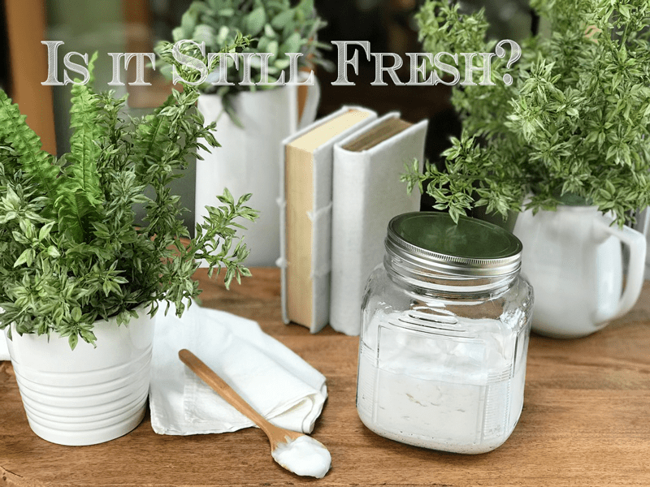

Storing Prepared Raw Foods and Shelf Life
Besides ingredient substitutions, I am often asked, “How long will this last?” I am going to do my best to address this question as the answer isn’t black and white. Keep in mind, we are dealing with fresh whole foods, and the point of eating these foods is to eat it when it is at its freshest state so we can receive the most nutrients and enzymes available.
We need to let go of comparing raw foods with cooked, processed, packaged, and canned foods, especially when it comes to storing. The idea behind those foods is convenience and shelf life. The idea behind raw foods is freshness and nutrients! So, please don’t expect raw foods to have a shelf life like processed foods.
Unlike most cooks, we can’t rely on high temperatures to kill harmful bacteria. The time and temperature rules of food safety still apply. If anything, proper storage, refrigeration, and timely preparation of raw food becomes even more essential. It is important to remember that raw food is just food; it is preservative-free and should be treated the same way you would with any other fresh food.
Below I will be sharing some shelf life suggestions. Along with those suggestions, you will also want to engage your senses. Use your eyes, nose, touch, and taste to determine how fresh something is or isn’t.

How does it look, smell, taste, feel?
I get a lot of questions through the recipe comment section or email, asking me, “How long will “…….” last?” “I left my “…..” on the counter, is it still good?” “My coconut yogurt is strong-smelling, is it ok to eat?” Whereas these are great questions, it is difficult for me to determine the answers when I am not in your kitchen. I can’t see your preparation methods, and I don’t know how fresh the ingredients were, how long you dehydrated something or if moisture was left in it, and so on. With all that said, it is up to you to determine if your ingredient or dish is still fresh enough to enjoy. You will need to rely on your senses and the more you use these as food safety tools, the easier it will become in determining the shelf life of what sits before you.
Fine-tune your senses
Look
- Has the appearance of your ingredient or dish changed?
- Can you detect mold visually? Mold is probably the easiest way to tell if your leftovers have seen better days. Little spores can appear and spread quickly on aging food. In addition to the food’s surface, be sure to inspect the food from all angles. Mold is sneaky and can hide out at the bottom of Tupperware or glass jars.
- Has it lost its vibrant color (if applicable)? Some foods, like avocados, will naturally discolor as they’re exposed to air, but if once-vivid dishes have gone pale or developed a greenish tint, it’s time to say goodbye.
- If you’re freezing dishes for the long haul, you should still give them a check before they’re thawed. Frost and ice crystals don’t necessarily mean the food is inedible, but its flavor and texture will suffer.
Smell
- Start smelling your foods during ALL stages of food prep. You will begin to understand the difference between fresh and stale smelling foods.
- If it smells off-putting during any stage, don’t use it.
- It’s not the most pleasant way to tell if food has gone bad, but if everything looks fine and you’re still unsure, give it a whiff. If it smells rotten or pungent, or otherwise worse than when you put it in the fridge, it’s better not to take the risk.
Feel
- Does the food item feel dried from its original state?
- Do you detect a slimy texture that wasn’t there before?
- Has the overall texture radically changed?
- If you can answer yes to any of these, it most likely went bad.
Taste
- Create a HABIT of tasting each ingredient BEFORE you start making a recipe. This is VITAL! If you start with bad ingredients, your dish will be bad; there is NO disguising it.
- If you know you started with great tasting ingredients and you are still uncertain, you can taste a small portion of it. If it has changed in flavor, lost flavor, or tastes sour, then it most likely went bad. If you don’t like this method, my recommendation is, when in doubt, throw it out!
Dehydrated Foods
It is a little different when dehydration comes into play. If you dehydrate ALL of the moisture out of a food, it will keep for a long time in an airtight container. But this isn’t always our goal; sometimes we want to keep some moisture in the food for textural reasons.
In general, to prolong the shelf life:
- Keep the food out of direct sunlight.
- Use airtight containers, glass if at all possible to avoid plastic chemicals from leaching into your foods.
- Storing in the fridge can increase shelf life for an extra 7-14 days. The shelf life of many foods can be extended through chilled storage. Low temperatures slow down chemical changes and the growth of many molds, yeasts and spoilage, and pathogenic bacteria.
- Storing in the freezer can increase shelf life for up to three months. Be sure to store it properly to keep odors and moisture from getting in.
Bread (raw & dehydrated)
Shelf Life
- Raw bread can last for roughly five to seven days in the fridge and three months in the freezer.
- This time frame depends on how much moisture was left in the bread during the drying process. If you like the bread to be moister (like me) the shelf life will decrease.
- Improper storage can also shorten shelf life.
Storage Tips
- I like to wrap each individual slice of bread in plastic wrap regardless if I am storing it in the fridge or freezer.
- Every time you remove a food from the fridge or freezer, you shorten the shelf life, especially if frozen. If you freeze a loaf of sliced raw bread as a whole, chances are you will need to let it thaw a bit to break a piece off. Then you throw the rest of the loaf back in the freezer and repeat this process over time. Each time this occurs the bread is being exposed to air and being partially thawed, making it more vulnerable to mold and bacteria.
- If you have a large family or know that you will go through the loaf of bread quickly, then don’t worry about it. Just place it in a sealed container and store it in the fridge.
Cheesecakes (raw)
Shelf Life
- *All cheesecakes should be stored in the fridge or freezer when not being served.*
- Fridge storage (ingredient depending) can last three to five days (for optimal freshness).
- Freezer storage can extend the shelf life for up to three months.
Storage Tips for the Fridge
- If you plan on serving a whole cheesecake for a friend or family gathering or plan to eat off of it throughout the week, you can store the cheesecake in the fridge, providing you have the space for it.
- Remove the cheesecake from the springform pan and store it in an airtight domed cake container.
Storage Tips to freeze WHOLE Cheesecake
- Using the bottom of the springform pan
- When you first make the cheesecake, cover the base of the springform pan with plastic wrap.
- Keep the cake in the pan, cover the top, and flash-freeze until firm (this will prevent the wrapping from sticking to the cake when you go to remove it for serving).
- After it is firm, remove the outer rim (sides) of the springform pan, leaving the cheesecake sitting on the bottom of the pan.
- Wrap the cheesecake (along with the bottom of the pan) with several layers of plastic wrap and then a layer over the outside with aluminum foil for extra protection or slightly longer storage time.
- Label, date, and slide back into the freezer.
- Using a cardboard bottom
- When you first make the cheesecake, cover the base of the springform pan with plastic wrap.
- Keep the cake in the pan, cover the top, and flash-freeze until firm.
- Once solid, remove the cake from the freezer and remove the springform ring.
- Use the plastic wrap on the pan base to remove the pan bottom from the crust.
- Slide it onto a plastic or parchment-wrapped piece of heavy cardboard.
- Then wrap each cheesecake (with the cardboard bottom) with several layers of plastic wrap and then a layer over the outside with aluminum foil for extra protection or slightly longer storage time.
- Label, date, and slide back into the freezer.
- Vacuum seal option
- For long-term storage, flash-freeze the cheesecake then vacuum seal.
- The shelf life can then be extended to four months or more because you get a tighter, more dependable seal with less air and less chance of freezer burn.
- Label, date, and slide back into the freezer.
- Be sure to remove the vacuum-sealed bag before you start the thawing process.
- For a cheesecake with a topping – such as fruit, mint leaves, or fresh flowers, always freeze cheesecake WITHOUT the topping and add the topping before serving.
Freezing Cheesecake By the Slice
- Lay slices of cheesecake on a lined cookie sheet and flash-freeze.
- Once frozen, wrap the cheesecake slices in plastic food wrap and place them in a freezer bag or a freezer-safe cambro.
- Label, date, and slide back into the freezer.
- *For long-term storage the best bet is to freeze your cheesecake whole because it reduces the amount of surface area which reduces the risk of freezer burn.*
- If you are making a cheesecake to enjoy at home, I suggest creating single servings in small freezer-safe jars. Then you can remove one at a time and decrease the risk of them becoming freezer-burnt. I do this all the time for my husband. No slicing or dealing with a mess, just grab and go.
Crackers, Croutons, and Kale Chips (raw and dehydrated)
Shelf Life
- Countertop storage can last 7-14 days.
- Fridge storage can extend the shelf life to 14-28 days. Some crackers (recipe depending) will soften in the fridge. If that happens, just pop them back in the dehydrator until they firm up.
- Freezer storage can last up to three months.
Storage Tips
- Storing the crackers in airtight containers is important because it will keep air out and reduce moisture.
- If you live in a warm climate and humidity is an issue, you can put a desiccant in the storage container to help with moisture issues.
- If you make large batches of crackers, I recommend storing them in several smaller containers instead of one large container. Every time you open the large container, you let in air and moisture, which will shorten the shelf life.
- If during ANY of these storage methods, the crackers should start to soften, you can pop them back in the dehydrator to crisp them back up.
- Kale chips are fragile so store them in a solid container rather than a plastic bag.
- Croutons are something I love to freeze and always have on hand. Place in a freezer-safe container and freeze. They don’t require any thawing, just remove the desired amounts, throw on a salad, and enjoy.
Cookies and Bars (raw and dehydrated)
Shelf Life
- Countertop storage can last 7-14 days.
- Fridge storage can possibly extend the shelf life to 14-28 days.
- Freezer storage can last up to three months.
Storage Tips
- If you stop the dehydration process when there is some moisture remaining, you will want to refrigerate the cookies to slow down spoilage. I often pull my cookies out of the dehydrator early to maintain a softer texture.
- Store them in airtight containers regardless of where you store them.
- Putting a desiccant pack into the storage container can also help with some moisture issues.
- I like to freeze my cookies, removing them as needed. If you want a warm delicacy, warm them up in the dehydrator and enjoy with a glass of cold almond milk.
- Store cookies in single layers with parchment or plastic wrap in-between layers to prevent them from sticking to one another.
- Wrap bars individually and then slide into a plastic bag or airtight container.
Ice Cream and Frozen Treats (raw)
Shelf Life
- The shelf life of raw ice cream seems to be anywhere from one to three months. How and where you store the treats can help prolong the expiration date.
Storage Ideas
- Store the ice cream in the very back of the freezer, as far away from the door as possible. Every time you open your freezer door you let in warm air. Keeping ice cream way in the back and storing it beneath other frozen items will help protect it from those steamy incursions.
-
-
Ice cream is full of fat, and even when frozen, fat has a way of soaking up flavors from the air around it, including those in your freezer. To keep your ice cream from taking on those odors, use a container with a tight-fitting lid. For extra security, place a layer of plastic wrap between your ice cream and the lid.
- Remove popsicles from the molds all at once and place them in a freezer-safe bag or container to prevent them from getting freezer burnt. If you keep them in a mold that holds six popsicles and you take it out each time to remove one, you typically have to wait a bit for it to soften so it will release. Each time you do this you keep softening and refreezing the remaining popsicles which can increase freezer burn.
Non-Dairy Milks
Shelf Life
- In the fridge, shelf life can range between three to five days.
- In the freezer, shelf life can be prolonged up to three months
Storage Tips for the Fridge
- Store in the back of the fridge, the temperature is coldest and most stable, as opposed to the door, where the temperature can fluctuate.
- Mason jars with metal rings are perfect for storing milks. The white plastic lids for jars often leak when you go to shake the jar before using.
- Use the appropriately sized jar for the amount of milk you have. This means, fill the jar as full as you can before putting on the lid.
- Label and date.
Storage Tips for Freezing
- Nut and seed milks freeze wonderfully. Be sure to use containers that are freezer-safe, especially if they are made of glass.
- When freezing the milk, do so in portions that you know you will use within a certain time frame — no sense in thawing a quart when you may only want a cup or so.
- Avoid freezing, thawing, and refreezing.
- For smoothies, freeze the milk in ice cube trays. Once frozen, pop them out and place them in a freezer-safe bag or container. Use the frozen milk in place of ice cubes.
Spreads, Dips, Dressings, Soups, and Condiments (raw)
Shelf Life
- In general, these types of recipes will last three to seven days (ingredient depending).
- Some can be frozen, while others will suffer the loss of texture once thawed. So clearly, this is all depending on the recipe.
Storage Tips
- Store these items in glass containers in the fridge.
- Use containers that are size-appropriate, the less air above the food and lid the better.
- Make sure that the containers are airtight so other fridge odors don’t get in and alter the flavor.
- Be sure to label and date each item.
Rule of Thumb
A good rule of thumb to consider is, if there are ingredients in the raw food recipe that usually need refrigeration, then refrigerate your creation. If nothing in the raw food recipe requires refrigeration, most likely you won’t have to refrigerate it because there isn’t anything in it that will spoil. Use your senses along with common sense. If I missed something, please leave a comment below. blessings, amie sue
© AmieSue.com